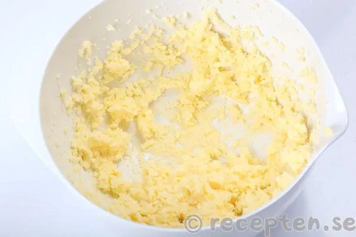
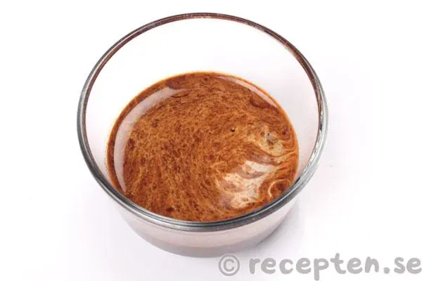

Mät upp smör, strösocker och vaniljsocker i en bunke.
Låt stå framme i rumstemperatur
tills smöret blivit rumsvarmt.
Vispa till en jämn smet med elvisp.
150g smör
1.5dl strösocker
1msk vanilj socker

2.
Blanda snabbkaffepulver med vatten.
2-3 tsk snabbkaffepulver och 2-3 msk vatten
2-3 tsk snabbkaffepulver och 2-3 msk vatten

3.
Tillsätt kaffe, kakao, havregryn och kokosflingor och rör till en
jämn smet med elvisp. Kör gärna lite extra, gärna ca 5 minuter med
elvispen så blir smeten ännu godare.
4.
Häll upp kokosflingor eller pärlsocker i en djup tallrik.
Rulla bollar i valfri storlek av smeten och rulla bollarna i
kokosflingorna eller pärlsockret.
Lägg chokladbollarna i en burk och förvara i kylskåp.
De går också att frysa in.
(Om smeten är väldigt lös och kletig kan man ställa
in den i kylen eller frysen en stund innan man rullar bollar.)
Servera chokladbollarna kylskåpskalla, då är de godast tycker jag.
Man kan annars låta dem stå framme i rumstemperatur en
stund så blir de mjukare men även kladdigare.